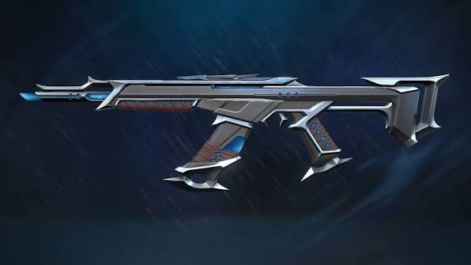
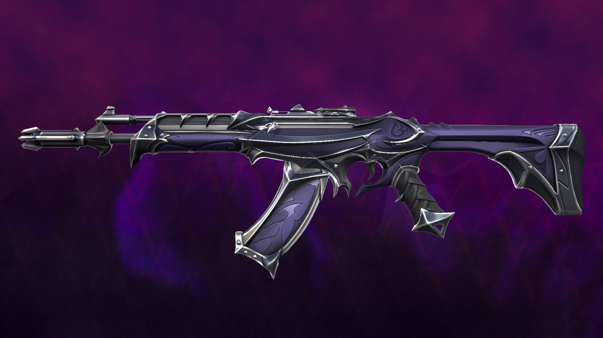
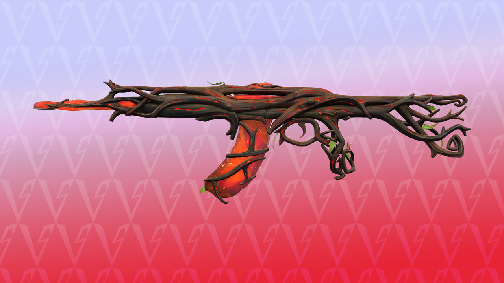
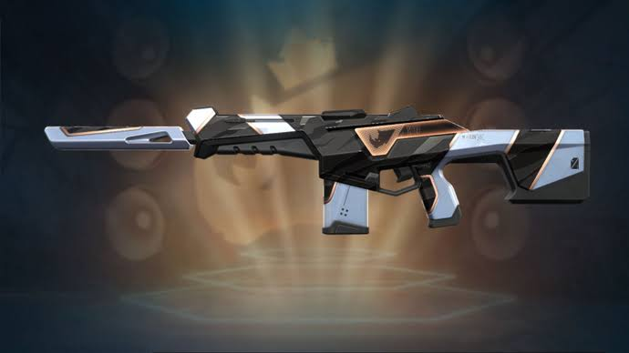
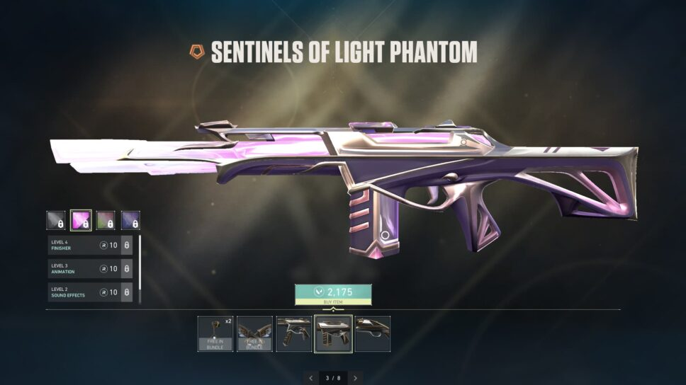
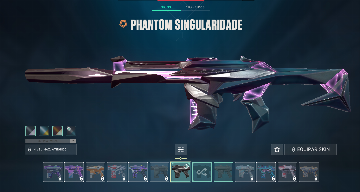
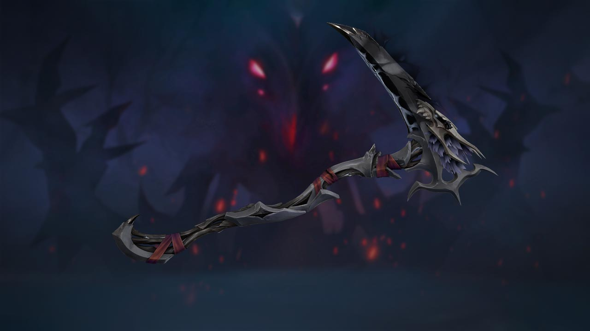
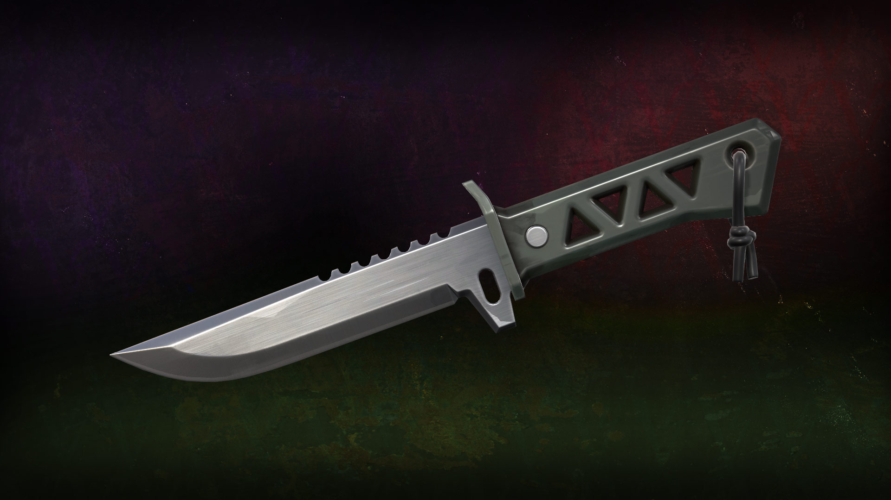
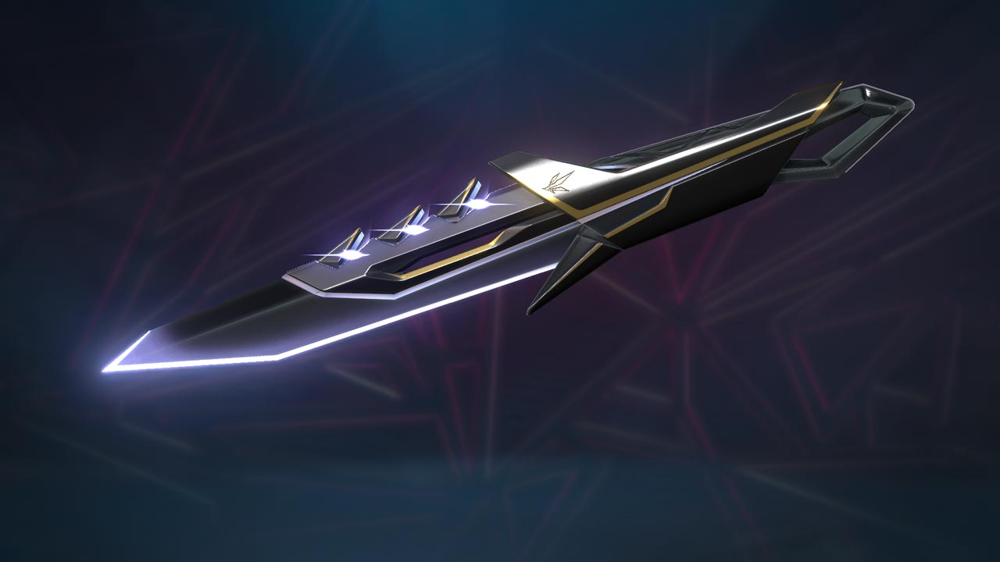

Nenhum card encontrado para essa pesquisa.









Uma Vandal de visual inspirado em água e tempestades, com acabamento fluido e efeitos visuais marcantes ao disparar.
Com estética sombria e detalhes arcanos, a Reaver Vandal transforma cada eliminação em uma experiência cheia de personalidade.
Inspirada na natureza, combina madeira, raízes e energia mística em uma aparência orgânica para a Vandal.
Uma Phantom de visual moderno e vibrante, feita para quem gosta de destacar sua precisão e estilo durante as partidas.
Com tema de luz e ornamentos elegantes, esta Phantom traz uma presença heroica e efeitos especiais para o combate.
Seu design futurista remete a um buraco negro, com formas geométricas e efeitos visuais de ficção científica.
Uma faca de aparência sombria e sobrenatural, com linhas dramáticas que combinam com uma coleção de temática noturna.
De visual tático e futurista, a Xenohunter parece uma ferramenta especializada para rastrear alvos em território desconhecido.
Com acabamento angular e detalhes inspirados em presas, esta faca aposta em um estilo agressivo e marcante.